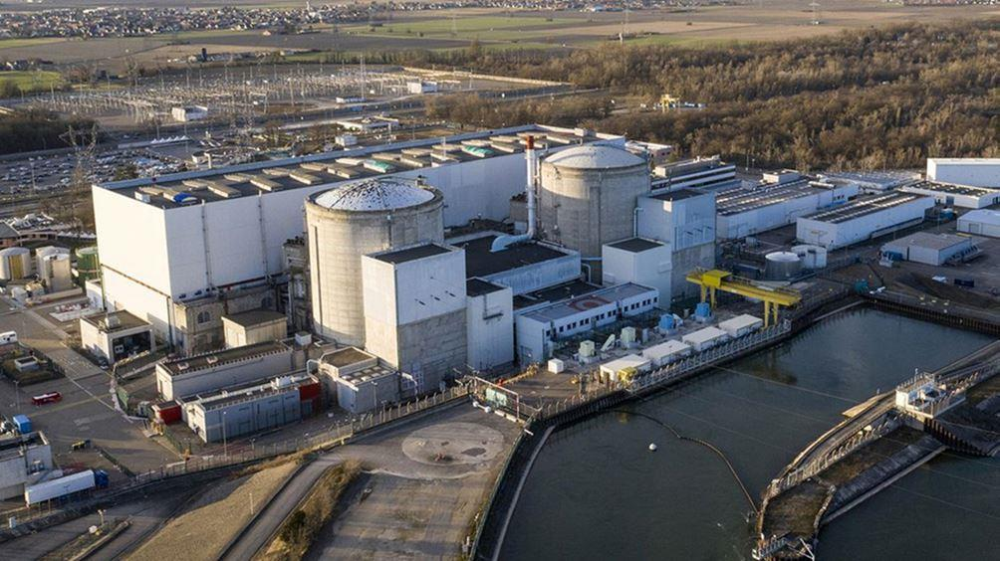
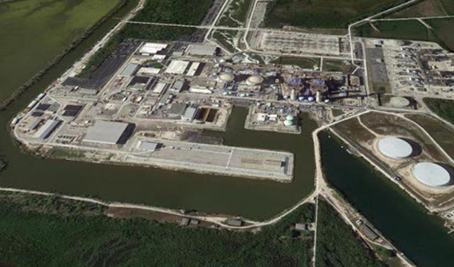
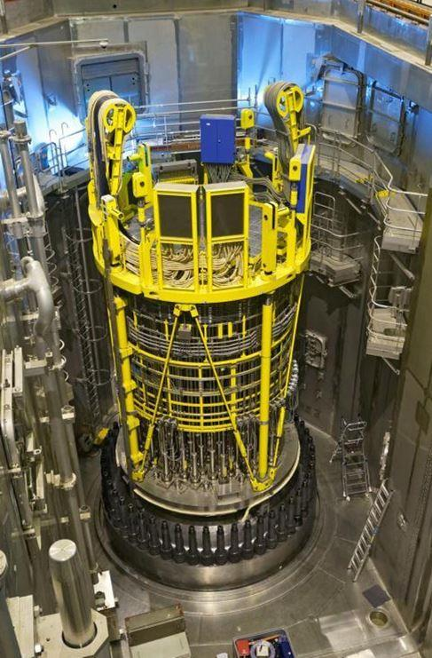
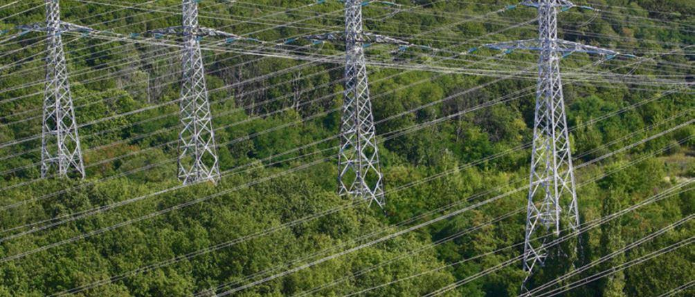

Six réacteurs ont déjà franchi en France une durée d’exploitation de 40 ans. Fessemheim 1 et 2, et Bugey 1,2,3 et 4.
Le parc nucléaire français actuel est dit de deuxième génération. Il a bénéficié d’une démarche de standardisation industrielle et d’une construction par paliers successifs. Cette approche apporte une valeur ajoutée, et en matière de sûreté nucléaire pour faciliter la détection des événements précurseurs et des signaux faibles, et sur le plan économique en mutualisant de façon utile tout ce qui peut l’être. Cette réussite industrielle du parc nucléaire français existant (qui rappelons le permet à la France d’exporter chaque année depuis des dizaines d’années, plus de deux milliards d’euro, en électricité ce qui confirme la pleine compétitivité du parc nucléaire français existant), est restée encore récemment comme unique au monde. Elle est désormais également déployée en Chine dont la taille du parc nucléaire est en passe de remplacer la France à la deuxième place mondiale, derrière celle du parc américain. Une telle approche requiert, au regard des enjeux de sûreté nucléaire évoqués plus haut, des exploitants nucléaires disposant, dès le moment de la conception des réacteurs, d’une perspective sur l’ensemble du cycle d’exploitation, un tissu industriel performant apte à répondre aux exigences de qualité et de l’exploitant, et un environnement général favorable pour continuer à investir, et en compétences, et en innovation technique.
La législation et la réglementation de la sûreté en France impose un réexamen décennal. Ce réexamen comporte deux volets.
Le premier volet porte sur un examen de conformité pour s’assurer que les mécanismes potentiels de vieillissement ne font pas apparaitre de fragilité pour les dix prochaines années d’exploitation, et que les marges de sûreté prévues à la conception demeurent disponibles.
Un deuxième volet porte sur une réévaluation de sûreté, avec des modifications sur le réacteur lui-même, pour renforcer encore la sûreté à la conception, renforcer la robustesse aux agressions internes type incendie par exemple, ou externes, types séisme ou phénomènes météorologiques extrêmes, diminuer le risque de fusion du cœur et prévenir les conséquences éventuelles d’un accident grave. Ce réexamen intègre le retour d’expérience du parc français, mais aussi le retour d’expérience international. On peut ainsi estimer que le risque de fusion du cœur a diminué de près d’une décade entre la conception initiale, au moment de leur construction, et l’état actuel des réacteurs en exploitation en France.
Les évolutions à venir avec la prise en compte du risque d’effet de serre et de ses conséquences, et les données de retour d’expérience venant de l’ensemble de la communauté nucléaire des exploitants nucléaires, notamment à travers l’association mondiale des opérateurs nucléaires WANO1, font l’objet d’un suivi particulier, notamment à travers les revues de pairs entre exploitants nucléaires, (Peer Review de Wano) et entre Autorités de sureté ( revues OSART de L’AIEA2)
Parmi le retour international, les données relatives à l’instruction de la prolongation à 80 ans engagée par les opérateurs nucléaires américains et l’autorité de sûreté américaine, constituent un point de repère important. Six réacteurs font l’objet d’une telle instruction, Turkey Point 3 et 4 (réacteurs à eau pressurisée de 800 MWe, chaudière Westinghouse, démarrés en 72 et 73, exploitant Florida Power and Light Compagny); Peach Bottom 2 et 3, (réacteurs à eau bouillante de 1300 MW de chaudière général Electric, exploitant Exelon) ; et Surry 1 et 2, (réacteurs de 800 MW à eau pressurisée, chaudière Westinghouse, démarrés en 1972 et 1983, exploitant Dominion).
Turkey Point 3 et 4 viennent d’obtenir le 4 décembre 2019 de la part de l’Autorité de sûreté américaine, la NRC3, la licence pour 80 ans d’exploitation.

Nouveau nucléaire
Les réacteurs dits de troisième génération se distinguent par des objectifs de sûreté notablement renforcés à la conception, avec diminution d’un facteur dix du risque de fusion de cœur par rapport à la conception initiale des réacteurs précédents, et mise en place de dispositions techniques pour limiter à un périmètre restreint dans le temps et l’espace les conséquences potentielles pour la population et l’environnement d’un éventuel accident grave avec fusion du cœur.
Flamanville 3, dont la construction a démarré le 3 décembre 2007, a souffert de l’absence de construction neuve en France durant plus de vingt ans (le dernier démarrage d’un chantier de construction neuve avait eu lieu en France vingt ans auparavant, en 1988 à Civaux (Civaux 2 a démarré en 1997 et Civaux 2 en 1999), avec en conséquence la perte de compétences industrielles de réalisation, tant pour EDF que pour ses fournisseurs.
Le retour d’expérience de Flamanville 3 a cependant été déjà très utile pour Taishan 1, dont la construction a démarré le 18 novembre 2008 après Flamanville 3, et dont le premier couplage au réseau électrique a eu lieu le 29 juin 2018, et pour Taishan 2 (début de construction le 15 avril 2010 et premier couplage au réseau électrique le 23 juin 2019). Le retour d’expérience d’ores et déjà disponible de cette exploitation industrielle permet de confirmer les choix de conception de l’EPR qui a été le premier réacteur de troisième génération à démarrer dans le monde.
Les réacteurs de Fessemheim 1, Bugey 2, Tricastin 1, Gravelines 1 et Dampierre 1 ont été démarrés respectivement en 1977 pour Fessemheim, 1978 pour Bugey, et 1980 pour les trois derniers. Ces réacteurs dépasseront les 50 ans à l’horizon 2030. Si techniquement, les 60 ans voire les 80 ans sont atteignables en exploitation au regard des données d’exploitation et du retour d’expérience international, il apparait cependant nécessaire de prévoir le remplacement partiel de manière anticipée et graduée pour éviter un effet de pointe plus difficilement gérable sur le plan industriel.
Le temps de retour sur investissement apparait aujourd’hui très en faveur du nucléaire existant à travers le Grand carénage en cours, et qui constitue la source décarbonée et pilotable la plus compétitive. La Commission de régulation de l’Energie (la CRE) a reçu pour l’année 2020 un total de demandes de 147,0 TWh d’électricité nucléaire formulées par 73 fournisseurs - hors fourniture des pertes des gestionnaires de réseau et hors filiales d’EDF - alors que la quantité d’électricité allouée aux fournisseurs au prix de 42€ par MWh est plafonnée à 100 TWh4 . La décision d’investir dans le nouveau nucléaire devra requérir des modalités de financement adaptées et une régulation ad hoc de mise à disposition de l’énergie nucléaire dans son ensemble en y incluant le nouveau nucléaire. Cette régulation du nucléaire devra tenir compte de la nécessaire rétribution à sa juste valeur de l’opérateur industriel qui en assure la maitrise industrielle, et donner une visibilité suffisante sur la durée aux fournisseurs et investisseurs de toute nature, pour qu’ils soient en situation d’investir et de contribuer à la performance industrielle du nucléaire, pour et dans le respect de l’intérêt général de tous.
Pour ne pas reperdre à nouveau la compétence industrielle aujourd’hui partiellement reconstituée avec la construction de Flamanville 3 en voie d’achèvement, et pour répondre de manière graduée et efficace au besoin de début de remplacement du parc nucléaire existant, il conviendrait ainsi de pouvoir démarrer la construction avant 2025 de nouveaux réacteurs.
Le modèle EPR.2 aujourd’hui étudié est aujourd’hui quasiment disponible pour bénéficier du retour d’expérience de Flamanville 3, de Taishan et de Hinkley Point C en cours de construction au Royaume Uni et dont le démarrage est visé à l’horizon 2025. Ce projet bénéficie également de simplifications et d’innovations de tout ordre qui ne remettent pas en cause la conception EPR aujourd’hui qualifiée, mais qui facilitent la réalisation industrielle, et qui constituent ainsi une assurance complémentaire dans la qualité finale et le respect du devis initial en coût et délais.
La communauté des exploitants nucléaires de réacteurs EPR au niveau mondial (EDF en France et au Royaume Uni, TVO en Finlande, CGN en Chine) constitue d’ores et déjà un lieu privilégié de partage d’expérience et d’innovation pour continuer à faire progresser et la sûreté nucléaire et la performance des réacteurs EPR.
Une nécessaire vigilance renforcée sur la sûreté du système électrique en France comme en Europe
Le retour d’expérience des événements nucléaires à travers le monde met en évidence que la perte de sources électriques est un initiateur ou un précurseur qui pèse d’un poids significatif dans les études probabilistes de sûreté, de par le risque de mode commun associé à ce type d’événements. Dans la défense en profondeur pour renforcer la sûreté nucléaire, la disponibilité des sources électriques internes comme externes demeure un point de vigilance avec l’évolution des systèmes électriques qui deviennent plus complexes, et donc exigeant une régulation adaptée pour en assurer la sûreté et éviter des « black out 5» avec la nécessaire prise en compte des facteurs d’évolution suivants :
- le développement de réseaux locaux avec le renforcement de la production locale décentralisée et du stockage d’énergie, qui introduisent de nouveaux besoins de régulation et de coordination avec les réseaux centralisés
- l’extension des interconnexions électriques (techniquement, sous réserves que les conditions géopolitiques soient réunies, il serait possible de boucler l’interconnexion électrique tout autour de la Mer Méditerranée alors qu’aujourd’hui l’interconnexion électrique de l’Europe inclut la Turquie mais non encore la Syrie, et au Sud, le Maghreb est interconnecté à l’Europe via le détroit de Gibraltar, mais l’interconnexion électrique s’arrête à la Tunisie, en limite avec la Lybie. Dans l’ensemble de l’Afrique, les zones d’interconnexions demeurent encore très limitées) le développement de productions intermittentes6 ne participant pas aux réglages de fréquence et à l’ajustement temps réel entre l’offre et la demande en électricité, ce qui impose un élargissement des plages de régulation et un renforcement de la résilience des systèmes électriques aux variations ponctuelles de fréquence qui peuvent traduire des besoins d’ajustement rapide entre la demande en électricité et l’offre de production d’électricité effectivement disponible.
Il convient de noter qu’un réacteur nucléaire, sous réserves que les dispositions de sûreté nucléaire soient prises pour faire face aux évolutions de la sûreté du système électrique telles qu’elles viennent d’être décrites, constitue par la capacité pilotable du réacteur, et sa capacité potentielle de réserve dite primaire ou secondaire pour la tenue de la fréquence du réseau électrique, une source à haute valeur ajoutée pour la sûreté du système électrique. Les réacteurs nucléaires, qui peuvent s’ilôter sur eux-mêmes pour produire leurs seuls besoins de consommation électrique pour leurs propres circuits auxiliaires, constituent également une réserve de puissance potentiellement disponible pour la reconstitution du réseau en cas d’incident de réseau généralisé.
Il convient également de mentionner que les investissements très significatifs et récents engagés en Europe dans les énergies intermittentes imposent des investissements conséquents d’adaptation dans les systèmes électriques pour tenir compte des nouvelles répartitions de flux d’énergie dans les réseaux entre les lieux de production et de consommation. ENTSOE, l’association des opérateurs de réseau électrique au niveau de l’ensemble du système électrique interconnecté en Europe, estime un besoin d’investissement de 114 Milliards d’euro dans les réseaux électriques de transport (les autoroutes de l’électricité) d’ici 2030 pour déployer ces nouveaux flux.7
Tout retard dans le financement ou le déploiement industriel de ces nouveaux lourds investissements pourrait induire de nouvelles contraintes de gestion du système électrique dans son ensemble, et induire, de facto, un accroissement du risque de black out.
Pour mémoire, les derniers grands événements sur le système électrique en Europe ont eu lieu en Italie, black out total le 28 septembre 2003, perte d’un sixième du réseau ouest européen le 4 novembre 2006, et black out de la Turquie le 31 mars 2015.
Et que dire du lien entre nucléaire et militaire ?
Le nucléaire civil est un élément d’autonomie stratégique sur le plan de l’approvisionnement énergétique. C’est un patrimoine national tant sur le plan industriel et technique que sur le plan des compétences humaines. Il y a donc bien un enjeu de défense nationale du patrimoine national associé à l’énergie nucléaire. Et l’utilisation civile de l’énergie nucléaire s’inscrit nécessairement en conséquence dans un contexte institutionnel et réglementaire ad hoc.
Le lien avec l ‘activité nucléaire militaire n’est pas pour autant systématique. Quinze pays en Europe disposent de l’énergie nucléaire civile8. Seuls deux pays disposent de l’arme nucléaire (France et Royaume Uni).
Les applications nucléaires civiles peuvent être très diverses : production d’électricité, production d’hydrogène, production de chaleur industrielle ou urbaine, santé ( productions d’isotopes médicaux pour la radiographie ou pour les traitement thérapeutiques…), propulsion maritime et spatiale.
Le développement de ces applications civiles peut intéresser les militaires et les activités de défense, comme pour toute autre domaine industriel à enjeu pour la Nation, systèmes d’information, aérospatiale, transports, industrie pharmaceutique et génétique, robotique, matériaux avancés,….
Comme pour les autres secteurs industriels, il y a des éléments de prévention et de protection pour la prise en compte des menaces et la préservation des intérêts vitaux de la Nation. La détermination des menaces et les dispositions réglementaires à prendre en compte sont de la responsabilité des Pouvoirs Publics.
Le drone Dragonfly, à propulsion nucléaire
La confidentialité est un élément de la protection.
La prise en compte des réglementations dites à double usage, comme pour toute industrie, et le respect des exigences des traités dans lesquels la France s’est engagée pour prévenir les conflits et le risque de corruption, de terrorisme, et de prolifération des armes de destruction massive, conditionnent la stricte séparation des activités civiles et militaires.
B.M.
NOTES ET RÉFÉRENCES
1, WANO World Association of Nuclear Operators, créée en 1989 dans le cadre du retour d’expérience de Tchernobyl
2, OSART Operational Safety Analysis Review Team, AIEA Agence Internationale de l’Energie
Partager cette page